以下是可以在122.0.65.73 23333端口使用的先行卡的列表。下载补丁后即可使用。
使用方法：原版游戏下载补丁后解压至游戏文件夹，YGOMobile请自定义数据库（方法请查看压缩包内使用说明），暂不保证对其他版本的支持。
资料来源：任天堂世界论坛，@Solari_28。
脚本作者：ygopro-pre-script，YGOPRO。目前所有脚本来自于以上这2个项目，在此对各自的贡献者表示感谢。
星星图标是Yusuke Kamiyamane的作品。
版权声明：转载请注明出自本页面，并完整保留附带的使用说明文档。如果您想对本项目进行修改，请移步这里，但我们建议您直接参与官方项目ygopro-pre-script。
提示：如果您安装过其他先行卡补丁，安装本补丁前，请先删除expansions文件夹，否则可能会出现卡片重复的现象。
更新记录
- 2016-04-23 11:37
- 修复：光之护封灵剑墓地效果无效的问题。
- 2016-04-23 09:04
- 修复：魔导契约之扉效果无效的问题。
- 修复：魔术师的守护效果无效的问题。
- 2016-04-22 13:21
- 修复：方界波动墓地效果不把自身除外的问题。
- 2016-04-22 10:41
- 新卡：魔术师的守护、最终禁制咒、机动要塞 铁堡垒。MVP1已有照片的卡片已全部更新，共42张。剩余3张暂无照片无法更新。
- 修复：急袭猛禽-火刃焚烧猎鹰应为2素材。
- 修复：命运之发掘不抽卡的问题，墓地发动应为选发。
- 修复：次元反射镜效果处理时不在场上存在也会特殊召唤的问题。
- 修复：方界帝被战斗破坏的场合应不能发动效果。
- 2016-04-22 00:29
- 新卡：MVP1、CPF1新卡若干张。小部分卡暂时无法使用。
- 更新：优化部分卡图。
- 修复：奇异果魔术少女不增加守备力的问题。
- 2016-04-20 16:56
- 更新：修改方界部分卡的卡名和效果文，与NW同步。
- 修复：电磁石战士 电磁狂战神不能除外电磁石战士怪兽破坏卡片的问题。
- 2016-04-20 14:50
- 修复：ABC-双龙歼灭炮2效果大部分情况下不能发动的问题。
- 修复：青眼混沌极龙未被标记为「混沌」怪兽导致混沌形态不能使用的问题。
- 修复：电子化天使-韦驮天-不能把仪式魔法加入手卡的问题。
- 修复：沉默之剑文本错误。
- 2016-04-20 00:57
- 修复：电磁石战士γ1效果应为手卡特招。
- 2016-04-20 00:14
- 修复：究极爆风弹无法使用的问题，请重新下载补丁。
- 2016-04-20 00:02
- 新卡：MVP1/SDMY/SDKS/DP17/CPF1新卡共21张。其中部分卡暂时无法使用。
- 修复：携手魔人不增加守备力的问题。
- 2016-04-16 23:12
- 新卡：青眼混沌极龙、携手魔人、方界胤 维贾姆、方界超帝 因第罗·死神雷。
- 修复：守护神官 马哈德攻击力应为变成2倍，守备力应为2100。
- 修复：娱乐伙伴 小角应为取对象，修复能以里侧表示怪兽为对象的问题。
- 修复：睡巨人 咕咚不增加守备力的问题。
- 修复：马卡龙棉花糖无视王家长眠之谷的问题。
- 2016-04-14 23:23
- 修复：金齿轮被破坏的场合不能从卡组特殊召唤怪兽的问题。
- 2016-04-14 22:59
- 新卡：守护神官 马哈德、金齿轮。
- 修复：更新No.45 灭亡之预言者卡名，修复只会把怪兽无效的问题。
- 2016-04-11 10:07
- 新卡：睡巨人 咕咚。
- 2016-04-10 18:40
- 更新：删除已经正式更新的卡。
- 2016-04-09 23:11
- 修复：黑魔导阵不能拿黑魔术师本体的问题。
- 2016-04-09 22:40
- 修复：真龙皇 阿耆尼马兹德·消灭应为9星。
- 2016-04-09 21:55
- 新卡：巧克力魔术少女、方界新卡4张。流星方界器 狄瑜扎卡名并非来自NW，其他3张方界因效果未确定，暂时无法使用。
- 更新：909全卡更换正式密码，优化卡图。请重新下载补丁组卡。
- 修复：魔神王的禁断契约书未被标记为契约书的问题。
- 2016-04-09 00:45
- 修复：真龙皇 火明神·抹消者应为9星。卡图等待重做。
- 修复：炼装反击在卡不在场上被破坏也能发动的问题。
- 2016-04-08 16:47
- 修复：真龙皇 火明神·抹消者可能无法特殊召唤的问题。
- 2016-04-08 13:21
- 修复：娱乐伙伴 屏障气球貘可以丢弃魔法陷阱卡发动的问题。
- 修复：娱乐伙伴 橡胶绵羊怪兽效果发动后离场不处理的问题。
- 修复：DD 魔导贤者 尼古拉可以丢弃魔法陷阱卡发动的问题，和放置的灵摆怪兽能发动效果的问题。
- 修复：真龙剑士 卓辉星·和平可以用其他方式特殊召唤的问题，和不是在场上破坏也能发动效果的问题。
- 修复：妖精传姬-白雪工作不正常的问题。
- 修复：魔神王的禁断契约书特殊召唤的怪兽离场之后仍能被作为2效果融合素材的问题。
- 2016-04-08 11:06
- 修复：岩石番兵不能使用的问题。请重新下载补丁把这张卡放进卡组。
- 2016-04-08 00:21
- 修复：炼装反击不会把自身除外的问题。
- 2016-04-07 23:39
- 新卡：909全卡共80张、岩石番兵。
- 修复：No.45 灭亡的预言者 格兰普尔·罗可斯只能取怪兽为对象的问题。
- 2016-04-05 22:39
- 修复：修复No.45 灭亡的预言者 格兰普尔·罗可斯不能使用的问题。
- 2016-04-05 22:03
- 新卡：过早的归还、变形金字塔猎人、No.45 灭亡的预言者 格兰普尔·罗可斯。效果文与卡名并非来自NW。
- 更新：更新部分卡的脚本为ADS版，修复一些问题。
- 修复：修复强袭黑羽-神立之鬼丸刀鸟未被标记为强袭黑羽卡的问题。
- 修复：修复强欲而贪欲之壶在卡组少于12张时不能被钻石人发动的问题。
- 2016-04-04 22:08
- 新卡：魔神王的禁断契约书、强袭黑羽-神立之鬼丸刀鸟。效果文与卡名并非来自NW。
- 修复：红莲镜会被卡时点的问题。
- 修复：调节口香糖指定怪兽当作调整后会被技能抽取无效的问题。
- 修复：强欲而贪欲之壶在卡组11张时也可以发动的问题。
- 2016-04-04 10:15
- 修复：黑魔导强化不能保护覆盖的魔法陷阱卡的问题。
- 2016-04-03 23:23
- 修复：黑魔导强化不能使用的问题。
- 2016-04-03 22:55
- 修复：DD 魔导贤者 托马斯特殊召唤效果不处理的问题。
- 2016-04-03 20:13
- 修复：DD 魔导贤者 托马斯可以特殊召唤任意等级的怪兽的问题。
- 2016-04-03 19:22
- 新卡：DD 魔导贤者 托马斯、马卡龙棉花糖、黑魔导强化。部分效果文与卡名并非来自NW。
- 修复：变形金字塔之主2效果能以任意场地魔法卡为对象的问题。
- 修复：变形金字塔场地应为同名卡一回合一次。
- 修复：表侧表示存在于额外卡组的涅槃之超魔导剑士能被同调召唤的问题。
- 修复：奇异果魔术少女会使对方场上的魔法师族怪兽不能被取对象的问题。
卡片列表
| 卡图 | 卡名 | 效果 |
|---|---|---|
 | 破灭龙 甘多拉X | [怪兽|效果] 龙/暗 [★8] 0/0 ①：这张卡从手卡的召唤·特殊召唤成功时才能发动。这张卡以外的场上的怪兽全部破坏，给与对方破坏的怪兽之内攻击力最高的怪兽的攻击力数值的伤害。这张卡的攻击力变成和这个效果给与对方的伤害相同数值。 ②：自己结束阶段发动。自己基本分变成一半。 |
 | 暗黑骑士 盖亚王 | [怪兽|效果] 战士/地 [★7] 2300/2100 ①：对方场上有怪兽存在，自己场上没有怪兽存在的场合，这张卡可以从手卡特殊召唤。 ②：1回合1次，比这张卡攻击力高的怪兽在对方场上特殊召唤的场合才能发动。这张卡的攻击力直到回合结束时上升700。 |
 | 柠檬魔术少女 | [怪兽|效果] 魔法师/光 [★2] 800/600 ①：1回合1次，把「柠檬魔术少女」以外的自己场上1只「魔术少女」怪兽解放才能发动。从卡组把1只魔法师族怪兽加入手卡。 ②：1回合1次，这张卡被选择作为攻击对象的场合才能发动。从手卡把1只魔法师族怪兽效果无效特殊召唤。那之后，攻击对象转移为那只怪兽，攻击怪兽的攻击力变成一半。 |
 | 精灵圣剑士 | [怪兽|效果] 战士/地 [★4] 2100/700 这张卡在规则上也当作「精灵剑士」卡使用。 ①：自己手卡是1张以上的场合，这张卡不能攻击。 ②：1回合1次，自己主要阶段才能发动。从手卡把1只「精灵剑士」怪兽特殊召唤。 ③：这张卡的攻击给与对方战斗伤害时才能发动。自己从卡组抽出自己场上的「精灵剑士」怪兽的数量。 |
 | 古生物 林乔利虫 | [陷阱] ①：以除外的1张自己或者对方的卡为对象才能发动。那张卡回到墓地。 ②：场上的陷阱卡发动时，连锁那个发动这个效果才能从墓地发动。这张卡变成通常怪兽（水族·水·2星·攻1200/守0）在怪兽区域特殊召唤（不当作陷阱卡使用）。这个效果特殊召唤的这张卡不受怪兽的效果影响，从场上离开的场合除外。 |
 | 古生物 伊尔东钵 | [陷阱] ①：以场上1只表侧表示怪兽为对象才能发动。那只怪兽的攻击力·守备力直到回合结束时上升500。 ②：场上的陷阱卡发动时，连锁那个发动这个效果才能从墓地发动。这张卡变成通常怪兽（水族·水·2星·攻1200/守0）在怪兽区域特殊召唤（不当作陷阱卡使用）。这个效果特殊召唤的这张卡不受怪兽的效果影响，从场上离开的场合除外。 |
| 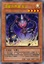 | 流星方界器 天尘 | [怪兽|效果] 机械/光 [★4] 1600/1600 ①：这张卡召唤·特殊召唤成功的场合才能发动。从卡组把1张「方界」卡送去墓地。 ②：1回合1次，这张卡表侧表示存在的状态，怪兽被送去自己墓地的回合才能发动。这张卡的攻击力直到回合结束时上升自己墓地的怪兽种类×200。这个效果在对方回合也能发动。 |
 | 古生物 皮卡虫 | [陷阱] ①：从手卡丢弃1张「古生物」卡。那之后，自己从卡组抽2张。 ②：场上的陷阱卡发动时，连锁那个发动这个效果才能从墓地发动。这张卡变成通常怪兽（水族·水·2星·攻1200/守0）在怪兽区域特殊召唤（不当作陷阱卡使用）。这个效果特殊召唤的这张卡不受怪兽的效果影响，从场上离开的场合除外。 |
 | 古生物 拟油栉虫 | [陷阱] ①：以场上1张魔法·陷阱卡为对象才能发动。那张卡破坏。 ②：场上的陷阱卡发动时，连锁那个发动这个效果才能从墓地发动。这张卡变成通常怪兽（水族·水·2星·攻1200/守0）在怪兽区域特殊召唤（不当作陷阱卡使用）。这个效果特殊召唤的这张卡不受怪兽的效果影响，从场上离开的场合除外。 |
 | 古生物 欧巴宾海蝎 | [怪兽|效果|超量] 水/水 [☆2] 0/2400 2星怪兽×2 「古生物 欧巴宾海蝎」的③的效果1回合只能使用1次。 ①：这张卡不受其他怪兽的效果影响。 ②：只要这张卡在怪兽区域存在，自己的「古生物」陷阱卡的发动从手卡也能用。 ③：这张卡有陷阱卡在作为超量素材的场合，把这张卡1个超量素材取除才能发动。从卡组把1张「古生物」陷阱卡加入手卡。 |
 | 古生物 足杯虫 | [陷阱] ①：以场上1张表侧表示的卡为对象才能发动。丢弃1张手卡，作为对象的卡除外。 ②：场上的陷阱卡发动时，连锁那个发动这个效果才能从墓地发动。这张卡变成通常怪兽（水族·水·2星·攻1200/守0）在怪兽区域特殊召唤（不当作陷阱卡使用）。这个效果特殊召唤的这张卡不受怪兽的效果影响，从场上离开的场合除外。 |
 | 古生物 奇虾 | [怪兽|效果|超量] 水/水 [☆2] 2400/0 2星怪兽×3只以上 ①：这张卡不受其他怪兽的效果影响。 ②：1回合1次，自己的魔法与陷阱区域的陷阱卡被送去墓地的场合才能发动。自己卡组最上面的卡翻开，那是陷阱卡的场合，加入手卡。不是的场合，送去墓地。 ③：这张卡有陷阱卡在作为超量素材的场合，1回合1次，把这张卡1个超量素材取除，以场上1张卡为对象才能发动。那张卡破坏。这个效果在对方回合也能发动。 |
 | 古生物 怪诞虫 | [陷阱] ①：以场上1只表侧表示怪兽为对象才能发动。那只怪兽的攻击力·守备力直到回合结束时变成一半。 ②：场上的陷阱卡发动时，连锁那个发动这个效果才能从墓地发动。这张卡变成通常怪兽（水族·水·2星·攻1200/守0）在怪兽区域特殊召唤（不当作陷阱卡使用）。这个效果特殊召唤的这张卡不受怪兽的效果影响，从场上离开的场合除外。 |
 | 古生物 马尔三叶形虫 | [陷阱] ①：从卡组把1张陷阱卡送去墓地。 ②：场上的陷阱卡发动时，连锁那个发动这个效果才能从墓地发动。这张卡变成通常怪兽（水族·水·2星·攻1200/守0）在怪兽区域特殊召唤（不当作陷阱卡使用）。这个效果特殊召唤的这张卡不受怪兽的效果影响，从场上离开的场合除外。 |
 | 古生物 加拿大虫 | [陷阱] ①：以对方场上1只表侧表示怪兽为对象才能发动。那只怪兽变成里侧守备表示。 ②：场上的陷阱卡发动时，连锁那个发动这个效果才能从墓地发动。这张卡变成通常怪兽（水族·水·2星·攻1200/守0）在怪兽区域特殊召唤（不当作陷阱卡使用）。这个效果特殊召唤的这张卡不受怪兽的效果影响，从场上离开的场合除外。 |
| 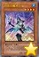 | 巧克力魔术少女 | [怪兽|效果] 魔法师/水 [★4] 1600/1000 ①：1回合1次，从手卡丢弃1只魔法师族怪兽才能发动。自己从卡组抽1张。 ②：1回合1次，这张卡被选择作为攻击对象的场合，以「巧克力魔术少女」以外的自己墓地1只魔法师族怪兽为对象才能发动。那只怪兽特殊召唤。那之后，攻击对象转移为那只怪兽，攻击怪兽的攻击力变成一半。 |
| 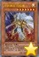 | 守护神官 马哈德 | [怪兽|效果] 魔法师/光 [★7] 2500/2100 ①：把这张卡抽到时，把这张卡给对方观看才能发动。这张卡从手卡特殊召唤。 ②：这张卡和暗属性怪兽进行战斗的伤害步骤内，这张卡的攻击力变成2倍。 ③：这张卡被战斗·效果破坏的场合才能发动。从自己的手卡·卡组·墓地选1只「黑魔术师」特殊召唤。 |
 | 异色眼幻象龙 | [怪兽|效果|灵摆] 龙/暗 [★3] 1200/600 8/8 ←8 【灵摆】 8→ ①：1回合1次，自己场上的表侧表示的「异色眼」灵摆怪兽被战斗·效果破坏的场合才能发动。选自己的灵摆区域1张卡破坏，从自己的额外卡组选「异色眼幻象龙」以外的1只表侧表示的「异色眼」灵摆怪兽在自己的灵摆区域放置。 【怪兽效果】 「异色眼幻象龙」的怪兽效果1回合只能使用1次。 ①：自己的灵摆区域有「异色眼」卡存在的场合，以自己场上1只「异色眼」怪兽为对象才能发动。那只怪兽在这个回合只有1次不会被战斗·效果破坏。这个效果在对方回合也能发动。 |
 | 娱乐伙伴 小独 | [怪兽|效果] 兽战士/暗 [★4] 800/1500 ①：这张卡召唤·特殊召唤成功的回合的自己主要阶段才能发动1次。从手卡把1只3星以下的「娱乐伙伴」怪兽攻击表示特殊召唤。 ②：对方回合，从自己墓地把这张卡和1只「娱乐伙伴 小独」以外的「娱乐伙伴」怪兽除外才能发动。这个回合自己受到的战斗伤害只有1次变成0。 |
 | 娱乐伙伴 小角 | [怪兽|效果] 兽战士/光 [★3] 600/1000 ①：这张卡召唤·特殊召唤成功的回合的自己主要阶段只有1次，以这张卡以外的自己场上1只攻击力1000以下的「娱乐伙伴」怪兽为对象才能发动。自己场上的同是表侧攻击表示的那只怪兽和这张卡变成守备表示，从卡组把1只「异色眼」怪兽加入手卡。 ②：对方回合，从自己墓地把这张卡和1只「娱乐伙伴 小角」以外的「娱乐伙伴」怪兽除外才能发动。自己回复500基本分。 |
| 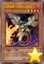 | 急袭猛禽-汽油弹火龙伯劳 | [怪兽|效果] 鸟兽/暗 [★4] 1000/1000 ①：1回合1次，自己主要阶段才能发动。给与对方600伤害。这个效果的发动后，直到回合结束时自己不能把「急袭猛禽」怪兽以外的怪兽的效果发动。 ②：这张卡被战斗破坏送去墓地时才能发动。从卡组把1只「急袭猛禽」怪兽特殊召唤。这个效果特殊召唤的怪兽的效果无效化。 |
| 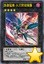 | 急袭猛禽-火刃焚烧猎鹰 | [怪兽|效果|超量] 鸟兽/暗 [☆4] 1000/1000 鸟兽族4星怪兽×2 ①：自己基本分比对方少3000以上，这张卡超量召唤成功的场合才能发动。这张卡的攻击力上升3000。 ②：这张卡战斗破坏对方怪兽时，把这张卡的超量素材任意数量取除才能发动。选取除的超量素材数量的对方场上的怪兽破坏。 |
 | 轻盈水星 | [怪兽|效果] 水/水 [★8] 2000/2000 ①：这张卡上级召唤成功时才能发动。场上的怪兽全部变成表侧攻击表示。 ②：这张卡也能把3只怪兽解放作召唤。 ③：只要这张卡的②的方法召唤的这张卡在怪兽区域存在，对方场上的怪兽的攻击力下降那怪兽的原本攻击力数值。 ④：这张卡在同1次的战斗阶段中可以作2次攻击。 |
| 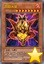 | 烈焰火星 | [怪兽|效果] 念动力/炎 [★8] 2600/2200 「烈焰火星」的②的效果1回合只能使用1次。 ①：这张卡在手卡·墓地存在的场合，把这张卡以外的自己墓地3只怪兽除外才能发动。这张卡特殊召唤。这个效果的发动后，直到回合结束时自己不能把怪兽特殊召唤。 ②：自己主要阶段1，把这张卡以外的自己场上的怪兽全部送去墓地才能发动。给与对方为送去墓地的怪兽数量×500伤害。 |
| 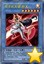 | 电子化天使-弁天- | [怪兽|效果|仪式] 天使/光 [★6] 1800/1500 「机械天使的仪式」降临。 ①：这张卡战斗破坏怪兽送去墓地的场合发动。给与对方那只怪兽的原本守备力数值的伤害。 ②：这张卡被解放的场合才能发动。从卡组把1只天使族·光属性怪兽加入手卡。 |
| 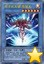 | 电子化天使-韦驮天- | [怪兽|效果|仪式] 天使/光 [★6] 1600/2000 「机械天使的仪式」降临。 ①：这张卡仪式召唤成功的场合才能发动。从自己的卡组·墓地选1张仪式魔法卡加入手卡。 ②：这张卡被解放的场合才能发动。自己场上的全部仪式怪兽的攻击力·守备力上升1000。 |
| 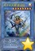 | 电子化天使-荼吉尼- | [怪兽|效果|仪式] 天使/光 [★8] 2700/2400 「机械天使的仪式」降临。 ①：这张卡仪式召唤成功的场合才能发动。对方必须把自身场上1只怪兽送去墓地。 ②：只要这张卡在怪兽区域存在，自己的仪式怪兽向守备表示怪兽攻击的场合，给与对方为攻击力超过那个守备力的数值的战斗伤害。 ③：自己结束阶段以自己墓地1只仪式怪兽或者1张「机械天使的仪式」为对象才能发动。那张卡加入手卡。 |
| 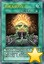 | 机械天使的仪式 | [魔法|仪式] 「电子化天使」仪式怪兽的降临必需。 ①：等级合计直到变成仪式召唤的怪兽的等级以上为止，把自己的手卡·场上的怪兽解放，从手卡把1只「电子化天使」仪式怪兽仪式召唤。 ②：自己场上的光属性怪兽被战斗·效果破坏的场合，可以作为代替把墓地的这张卡除外。 |
 | 红莲新星 | [怪兽|效果|调整] 天使/炎 [★1] 0/0 「红莲新星」的①的方法的特殊召唤1回合只能有1次。 ①：场上有8星以上的龙族同调怪兽存在的场合，这张卡可以从手卡特殊召唤。 ②：这张卡被需以调整2只以上为素材的同调召唤使用送去墓地的场合才能发动。从卡组把1只恶魔族·炎属性怪兽守备表示特殊召唤。 |
| 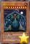 | 睡巨人 咕咚 | [怪兽|效果] 战士/地 [★10] 0/0 这张卡不能通常召唤。把有咕咚指示物10个放置的1只自己怪兽解放的场合才能特殊召唤。 ①：1回合1次，把手卡的这张卡直到回合结束时给对方观看，以自己场上1只1星通常怪兽为对象才能发动。给那只怪兽放置1个咕咚指示物。 ②：这张卡不受其他卡的效果影响。 ③：这张卡和怪兽进行战斗的伤害计算时发动。这张卡的攻击力·守备力只在伤害计算时变成那只怪兽的攻击力＋1000的数值。 |
| 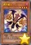 | 携手魔人 | [怪兽|效果] 恶魔/暗 [★4] 1000/1600 ①：只要这张卡在怪兽区域存在，对方不能选择其他怪兽作为攻击对象。 ②：这张卡的守备力上升这张卡以外的自己场上的表侧守备表示怪兽的原本守备力的合计数值。 |
| 并列之力 | [陷阱|永续] ①：自己场上有表侧守备表示怪兽2只以上存在的场合，自己场上的守备表示怪兽不会成为对方的效果的对象，不会被对方的效果破坏。 ②：这张卡被效果破坏的场合，可以作为代替把其他的自己的魔法与陷阱区域1张卡破坏。 | |
 | No.100 源数龙 | [怪兽|效果|超量] 龙/光 [☆1] 0/0 相同阶级的同名「No.」超量怪兽×2 ①：1回合1次，把这张卡1个超量素材取除才能发动。这张卡的攻击力直到对方回合结束时上升场上的超量怪兽的阶级合计×1000。 ②：这张卡被效果破坏时才能发动。场上的怪兽全部破坏。那之后，双方选自身墓地1张魔法·陷阱卡在场上盖放。 ③：这张卡在墓地存在，自己的手卡·场上没有卡的场合，对方的直接攻击宣言时才能发动。这张卡特殊召唤。 |
 | No.45 灭亡之预言者 | [怪兽|效果|超量] 不死/地 [☆2] 2200/0 2星怪兽×2只以上 ①：1回合1次，把这张卡1个超量素材取除，以这张卡以外的场上1张表侧表示的卡为对象才能发动。这只怪兽表侧表示存在期间，作为对象的表侧表示的卡的效果无效化。 ②：只要这张卡的①的效果作为对象的卡在场上表侧表示存在，双方不能把作为对象的卡以及那些同名卡的效果发动。 |
| 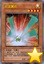 | 光波翼机 | [怪兽|效果] 机械/光 [★4] 1400/1200 ①：自己场上有「光波」怪兽存在的场合，这张卡可以从手卡特殊召唤。 ②：把这张卡解放才能发动。自己场上的全部「光波」怪兽的等级直到回合结束时上升4星。 |
| 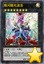 | 银河眼光波龙 | [怪兽|效果|超量] 龙/光 [☆8] 3000/2500 8星怪兽×2 ①：1回合1次，把这张卡1个超量素材取除，以对方场上1只表侧表示怪兽为对象才能发动。那只怪兽的控制权直到结束阶段得到。这个效果得到控制权的怪兽的效果无效化，攻击力变成3000，卡名当作「银河眼光波龙」使用。这个效果的发动后，直到回合结束时这张卡以外的自己怪兽不能直接攻击。 |
 | 花札卫-雨四光- | [怪兽|效果|同调] 战士/暗 [★8] 3000/3000 调整＋调整以外的怪兽3只 ①：只要这张卡在怪兽区域存在，自己场上的「花札卫」怪兽不会被效果破坏，不会成为对方的效果的对象。 ②：对方抽卡阶段对方通常抽卡的场合发动。给与对方1500伤害。 ③：对方结束阶段从以下效果选择1个发动。 ●下次的自己回合的抽卡阶段跳过。 ●这张卡的效果直到下次的对方准备阶段无效。 |
 | 真青眼究极龙 | [怪兽|效果|融合] 龙/光 [★12] 4500/3800 「青眼白龙」＋「青眼白龙」＋「青眼白龙」 「真青眼究极龙」的①的效果1回合可以使用最多2次。 ①：融合召唤的这张卡攻击的伤害步骤结束时，自己场上的表侧表示的卡只有这张卡的场合，从额外卡组把1只「青眼」融合怪兽送去墓地才能发动。这张卡可以继续攻击。 ②：自己场上的「青眼」怪兽为对象的魔法·陷阱·怪兽的效果发动时，把墓地的这张卡除外才能发动。那个发动无效并破坏。 |
| 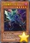 | 血腥魔兽人帝王 | [怪兽|效果] 兽战士/暗 [★5] 1900/1200 ①：自己场上没有怪兽存在的场合，这张卡可以从手卡特殊召唤。 ②：这张卡战斗破坏对方怪兽的场合发动。这张卡的攻击力上升500。 ③：这张卡被战斗破坏的场合发动。让把这张卡破坏的怪兽的攻击力下降500。 |
 | 强袭翼龙 | [怪兽|效果] 龙/光 [★4] 1800/1000 ①：这张卡战斗破坏对方怪兽时，把这张卡解放才能发动。从自己的手卡·墓地选「强袭翼龙」以外的1只龙族怪兽特殊召唤。 |
| 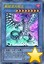 | 青眼混沌极龙 | [怪兽|效果|仪式] 龙/暗 [★8] 4000/0 「混沌形态」降临。这张卡不用仪式召唤不能特殊召唤。 ①：这张卡不会成为对方的效果的对象，不会被对方的效果破坏。 ②：这张卡向守备表示怪兽攻击的场合，给与攻击力超过那个守备力的数值的2倍数值的战斗伤害。 |
| 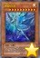 | 真眼白龙 | [怪兽|效果] 龙/光 [★10] 0/0 ①：自己场上的表侧表示的「青眼」怪兽被战斗或者对方的效果破坏时才能发动。这张卡从手卡特殊召唤，给与对方为自己墓地的龙族怪兽种类×600伤害。 ②：这张卡召唤·特殊召唤成功的场合，以自己墓地1只龙族怪兽为对象发动。这张卡的攻击力变成和那只怪兽的攻击力相同。 ③：场上的这张卡被效果破坏的场合发动。对方场上的怪兽全部破坏。 |
| 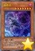 | 瘟疫龙 | [怪兽|效果] 龙/暗 [★7] 2500/1000 ①：1回合1次，支付100的倍数的基本分才能发动。这张卡以外的场上的表侧表示怪兽的攻击力下降因为这个效果发动而支付的基本分数值。 ②：1回合1次，以持有这张卡的攻击力以下的攻击力的场上1只怪兽为对象才能发动。那只怪兽破坏。 ③：这张卡被战斗·效果破坏的场合发动。场上的全部表侧表示怪兽的攻击力下降1000。 |
| 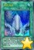 | 龙之斗志 | [魔法|速攻] ①：以这个回合特殊召唤的自己场上1只龙族怪兽为对象才能发动。这个回合，那只怪兽在同1次的战斗阶段中在通常攻击外加上可以作出最多有对方场上的这个回合特殊召唤的怪兽数量的攻击。 |
| 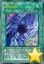 | 混沌形态 | [魔法|仪式] 「混沌」仪式怪兽的降临必需。 ①：等级合计直到变成和仪式召唤的怪兽相同为止，把自己的手卡·场上的怪兽解放或者作为解放的代替而从自己墓地把「青眼白龙」或者「黑魔术师」除外，从手卡把1只「混沌」仪式怪兽仪式召唤。 |
| 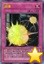 | 融爆 | [陷阱] ①：自己场上的卡被魔法卡的效果破坏时，以对方场上1张卡为对象才能发动。那张卡破坏。 ②：自己场上的卡被魔法卡的效果破坏时，把墓地的这张卡除外，以对方场上1张卡为对象才能发动。那张卡破坏。这个效果在这张卡送去墓地的回合不能发动。 |
| 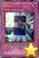 | 反击之门 | [陷阱] ①：对方怪兽的直接攻击宣言时才能发动。那次攻击无效，自己从卡组抽1张。那张抽到的卡是怪兽的场合，可以把那只怪兽表侧攻击表示通常召唤。 |
| 水晶化身 | [陷阱|永续] ①：对方怪兽的直接攻击宣言时，那只怪兽的攻击力是自己基本分以上的场合才能发动。这张卡发动后变成和自己基本分数值相同攻击力的效果怪兽（战士族·光·4星·攻?/守0）在怪兽区域攻击表示特殊召唤。那之后，攻击对象转移为这张卡。这张卡也当作陷阱卡使用。 ②：这张卡的效果特殊召唤的这张卡被战斗破坏的伤害计算后发动。给与对方这张卡的攻击力数值的伤害。 | |
| 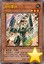 | 岩石番兵 | [怪兽|效果] 岩石/地 [★3] 1300/2000 「岩石番兵」的效果1回合只能使用1次。 ①：这张卡在墓地存在，自己场上的怪兽只有岩石族怪兽的场合才能发动。这张卡从墓地特殊召唤。 |
| 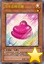 | 马卡龙棉花糖 | [怪兽|效果] 天使/光 [★1] 200/200 「马卡龙棉花糖」的效果1回合只能使用1次。 ①：这张卡被战斗·效果破坏的场合才能发动。从自己的手卡·卡组·墓地选这张卡以外的最多2只「马卡龙棉花糖」特殊召唤。 |
 | 浆果魔术少女 | [怪兽|效果] 魔法师/地 [★1] 400/400 ①：这张卡召唤成功的场合才能发动。从卡组把1只「魔术少女」怪兽加入手卡。 ②：1回合1次，这张卡成为对方的效果的对象时或者成为对方怪兽的攻击对象时才能发动。这张卡的表示形式变更，从卡组把「浆果魔术少女」以外的1只「魔术少女」怪兽特殊召唤。 |
 | 苹果魔术少女 | [怪兽|效果] 魔法师/炎 [★3] 1200/800 ①：1回合1次，这张卡被选择作为攻击对象的场合才能发动。从手卡把1只5星以下的魔法师族怪兽特殊召唤。那之后，攻击对象转移为那只怪兽，攻击怪兽的攻击力变成一半。 ②：这张卡被战斗·效果破坏的场合，以这张卡以外的自己墓地最多3只「魔术少女」怪兽为对象才能发动（同名卡最多1张）。那些卡加入手卡。 |
 | 奇异果魔术少女 | [怪兽|效果] 魔法师/风 [★5] 1800/1200 ①：把这张卡从手卡丢弃才能发动。自己场上的「魔术少女」怪兽的攻击力·守备力直到回合结束时上升双方的场上·墓地的「魔术少女」怪兽种类×300。这个效果在对方回合也能发动。 ②：只要这张卡在怪兽区域存在，自己场上的魔法师族怪兽不会被效果破坏，不会成为对方的效果的对象。 |
| 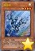 | 银齿轮 | [怪兽|效果] 机械/光 [★4] 1500/1000 「银齿轮」的①②的效果1回合只能有1次使用其中任意1个。 ①：这张卡召唤·特殊召唤成功时才能发动。从手卡把1只机械族·4星怪兽特殊召唤。 ②：这张卡被战斗·效果破坏的场合才能发动。从卡组把「银齿轮」以外的1只4星的「齿轮」怪兽特殊召唤。 |
| 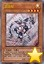 | 金齿轮 | [怪兽|效果] 机械/光 [★4] 1700/800 「金齿轮」的①②的效果1回合只能有1次使用其中任意1个。 ①：这张卡召唤·特殊召唤成功时才能发动。从手卡把1只机械族·4星怪兽特殊召唤。 ②：这张卡被战斗·效果破坏的场合才能发动。从卡组把「金齿轮」以外的1只4星的「齿轮」怪兽特殊召唤。 |
| 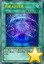 | 黑魔术的帷幕 | [魔法] ①：支付1000基本分才能发动。从自己的手卡·墓地选1只魔法师族·暗属性怪兽特殊召唤。 |
 | 魔导契约之扉 | [魔法] ①：从自己手卡选1张魔法卡加入对方手卡。那之后，从自己卡组把1只7·8星的暗属性怪兽加入自己手卡。 |
| 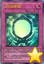 | 次元反射镜 | [陷阱|永续] ①：把自己场上2只怪兽除外，以对方场上1只表侧表示怪兽为对象才能把这张卡发动。这张卡发动后变成持有和作为对象的怪兽的攻击力相同数值的攻击力·守备力的效果怪兽（魔法师族·暗·4星·攻/守?）在怪兽区域攻击表示特殊召唤。这张卡也当作陷阱卡使用。 ②：这张卡的效果让这张卡特殊召唤成功的场合发动。给与对方这张卡的攻击力数值的伤害。 |
| 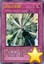 | 命运之发掘 | [陷阱] ①：自己受到战斗伤害时才能发动。自己从卡组抽1张。 ②：场上的这张卡被对方的效果破坏的场合才能发动。自己从卡组抽出自己墓地的「命运之发掘」的数量。 |
 | 次元斯芬克斯 | [陷阱|永续] 以自己场上1只表侧攻击表示怪兽为对象才能把这张卡发动。 ①：作为对象的怪兽被比那只怪兽攻击力高的对方怪兽攻击的战斗步骤中1次，可以把这个效果发动。给与对方那只攻击怪兽和作为对象的怪兽的攻击力差的数值的伤害。 ②：作为对象的怪兽从场上离开的场合这张卡破坏。 |
| 次元海市蜃楼 | [陷阱|永续] 以对方场上1只表侧攻击表示怪兽为对象才能把这张卡发动。 ①：作为对象的怪兽的攻击没让攻击对象怪兽被破坏的伤害步骤结束时，把自己墓地1只怪兽除外才能把这个效果发动。作为对象的怪兽变成再1次可以攻击，必须继续攻击。 ②：作为对象的怪兽从场上离开的场合这张卡破坏。 | |
 | 魔术师的守护 | [陷阱|永续] ①：只要自己场上有魔法师族怪兽存在，自己受到的全部伤害变成一半。 ②：这张卡从场上送去墓地的场合，以自己墓地1只魔法师族怪兽为对象才能发动。那只怪兽特殊召唤。 |
| 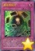 | 最终禁制咒 | [陷阱] ①：原本等级是7星以上的怪兽从自己以及对方的场上各有1只以上被送去墓地的回合才能发动。双方墓地的怪兽全部除外。那之后，可以把这个效果除外的怪兽之内等级最高的1只魔法师族怪兽在自己场上特殊召唤。 |
| 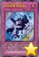 | 机动要塞 铁堡垒 | [陷阱|永续] ①：以自己场上的机械族·4星怪兽任意数量为对象才能发动。这张卡发动后变成效果怪兽（机械族·地·4星·攻/守0）在怪兽区域特殊召唤。那之后，作为对象的表侧表示怪兽当作装备卡使用给这张卡装备。这张卡也当作陷阱卡使用。 ②：这张卡的效果特殊召唤的这张卡的攻击力上升这张卡的效果装备的怪兽的攻击力的合计数值，对方不能把其他的自己场上的怪兽作为攻击对象，也不能作为效果的对象。 |
| 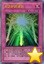 | 光之护封灵剑 | [陷阱|永续] ①：对方怪兽的攻击宣言时1次，支付1000基本分才能把这个效果发动。那次攻击无效。 ②：对方回合把墓地的这张卡除外才能发动。这个回合，对方怪兽不能直接攻击。 |
| 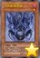 | 方界胤 毗贾姆 | [怪兽|效果] 恶魔/暗 [★1] 0/0 ①：这张卡不会被战斗破坏。 ②：这张卡和对方怪兽进行战斗的伤害步骤结束时才能发动。怪兽区域的这张卡当作永续魔法卡使用在自己的魔法与陷阱区域表侧表示放置，给那只对方怪兽放置1个方界指示物。有方界指示物放置的怪兽不能攻击，效果无效化。 ③：这张卡的效果让这张卡当作永续魔法卡使用的场合，自己主要阶段才能发动。魔法与陷阱区域的这张卡特殊召唤。 |
| 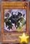 | 方界兽 暗黑之甘尼克斯 | [怪兽|效果] 兽/地 [★2] 0/0 这张卡不能通常召唤。把自己场上1只「方界」怪兽送去墓地的场合可以特殊召唤。 ①：这个方法特殊召唤的这张卡的攻击力上升1000。 ②：这张卡战斗破坏怪兽时，以自己墓地最多2只「方界胤 毗贾姆」为对象才能发动。这张卡送去墓地，作为对象的怪兽特殊召唤。那之后，可以从卡组把1只「方界兽 利刃之迦楼迪亚」加入手卡。 |
| 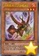 | 方界兽 利刃之迦楼迪亚 | [怪兽|效果] 兽/炎 [★3] 0/0 这张卡不能通常召唤。把自己场上2只「方界」怪兽送去墓地的场合可以特殊召唤。 ①：这个方法特殊召唤的这张卡的攻击力上升2000。 ②：这张卡在同1次的战斗阶段中可以作2次攻击。 ③：这张卡战斗破坏怪兽时，以自己墓地最多3只「方界胤 毗贾姆」为对象才能发动。这张卡送去墓地，作为对象的怪兽特殊召唤。那之后，可以从卡组把1只「方界超兽 破坏之乾闼尔」加入手卡。 |
| 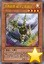 | 方界超兽 破坏之乾闼尔 | [怪兽|效果] 兽/光 [★4] 0/0 这张卡不能通常召唤。把自己场上3只「方界」怪兽送去墓地的场合才能特殊召唤。 ①：这个方法特殊召唤的这张卡的攻击力上升3000。 ②：这张卡在同1次的战斗阶段中可以作3次攻击。 ③：这张卡被对方送去墓地的场合，以自己墓地最多3只「方界」怪兽为对象才能发动。那些怪兽特殊召唤。那之后，可以从自己的卡组·墓地选1张「方界」卡加入手卡。 |
| 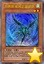 | 方界帝 疾风之盖伊罗 | [怪兽|效果] 天使/风 [★2] 0/0 这张卡不能通常召唤。把自己场上1只「方界」怪兽送去墓地的场合可以特殊召唤。 ①：这个方法特殊召唤的这张卡的攻击力上升800。 ②：这张卡从手卡的特殊召唤成功的场合发动。给与对方800伤害。 ③：这张卡战斗的伤害步骤结束时，以自己墓地最多2只「方界胤 毗贾姆」为对象才能发动。这张卡送去墓地，作为对象的怪兽特殊召唤。那之后，可以从卡组把1只「方界帝 神火之德拉耆尼」加入手卡。 |
 | 方界帝 神火之德拉耆尼 | [怪兽|效果] 天使/炎 [★3] 0/0 这张卡不能通常召唤。把自己场上2只「方界」怪兽送去墓地的场合可以特殊召唤。 ①：这个方法特殊召唤的这张卡的攻击力上升1600。 ②：这张卡从手卡的特殊召唤成功的场合发动。给与对方800伤害。 ③：这张卡战斗的伤害步骤结束时，以自己墓地最多3只「方界胤 毗贾姆」为对象才能发动。这张卡送去墓地，作为对象的怪兽特殊召唤。那之后，可以从卡组把1只「方界超帝 死雷之印陀罗」加入手卡。 |
| 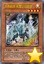 | 方界超帝 死雷之印陀罗 | [怪兽|效果] 天使/光 [★4] 0/0 这张卡不能通常召唤。把自己场上3只「方界」怪兽送去墓地的场合才能特殊召唤。 ①：这个方法特殊召唤的这张卡的攻击力上升2400。 ②：这张卡从手卡的特殊召唤成功的场合发动。给与对方800伤害。 ③：这张卡被对方送去墓地的场合，以自己墓地最多3只「方界」怪兽为对象才能发动。那些怪兽特殊召唤。那之后，可以从自己的卡组·墓地选1张「方界」卡加入手卡。 |
| 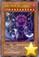 | 暗黑方界神 深红之挪婆 | [怪兽|效果] 恶魔/暗 [★10] 3000/0 这张卡不能通常召唤。把这张卡以外的手卡的「方界」卡3种类给对方观看的场合才能特殊召唤。「暗黑方界神 深红之挪婆」的③的效果1回合只能使用1次。 ①：这张卡不受这张卡以外的原本攻击力是3000以下的怪兽发动的效果影响。 ②：这张卡的攻击破坏怪兽时才能发动。这次战斗阶段中，这张卡只再1次可以攻击。 ③：自己结束阶段发动。双方玩家受到3000伤害。 |
| 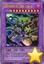 | 暗黑方界邪神 深红之挪婆·三神一体 | [怪兽|效果|融合] 恶魔/暗 [★10] 4500/3000 「暗黑方界神 深红之挪婆」×3 这张卡用以上记的卡为融合素材的融合召唤才能特殊召唤。 ①：这张卡不会成为对方的效果的对象，不会被对方的效果破坏。 ②：这张卡的攻击宣言时发动。对方基本分变成一半。 ③：这张卡战斗破坏怪兽时才能发动。这次战斗阶段中，这张卡只再1次可以攻击。 ④：自己受到效果伤害的场合发动。给与对方为受到的伤害数值的伤害。 |
| 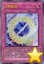 | 方界业 | [魔法|永续] ①：这张卡的发动时，可以以「方界胤 毗贾姆」以外的自己场上1只「方界」怪兽为对象。那个场合，从手卡·卡组把「方界胤 毗贾姆」任意数量送去墓地。那之后，作为对象的怪兽的攻击力上升这个效果送去墓地的怪兽数量×800。 ②：对方回合「方界」怪兽的效果让「方界胤 毗贾姆」特殊召唤的场合发动。这张卡送去墓地，对方基本分变成一半。 ③：把墓地的这张卡除外才能发动。从卡组把1只「方界」怪兽加入手卡。 |
| 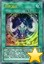 | 方界波动 | [魔法] ①：以自己场上1只「方界」怪兽和对方场上1只表侧表示怪兽为对象才能发动。那只自己怪兽的攻击力变成2倍，那只对方怪兽的攻击力变成一半。 ②：从自己墓地把这张卡和「方界」怪兽任意数量除外，以除外的「方界」怪兽数量的对方场上的表侧表示怪兽为对象才能发动。给那些怪兽各放置1个方界指示物。有方界指示物放置的怪兽不能攻击，效果无效化。 |
| 方界轮回 | [陷阱] ①：对方怪兽的直接攻击宣言时，以那1只攻击怪兽为对象才能发动。对方把那些同名怪兽尽可能从自身的手卡·卡组·墓地攻击表示特殊召唤。作为对象的怪兽以及这个效果特殊召唤的怪兽的攻击力变成0，给那些怪兽各放置1个方界指示物。有方界指示物放置的怪兽不能攻击，效果无效化。并且，再从自己手卡把1只4星以下的「方界」怪兽无视召唤条件特殊召唤。 | |
| 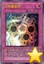 | 方界曼荼罗 | [陷阱|永续] ①：自己场上有「方界」怪兽存在的场合，以这个回合被破坏送去对方墓地的怪兽任意数量为对象才能把这张卡发动。那些怪兽的攻击力变成0在对方场上特殊召唤，给那些怪兽各放置1个方界指示物。有方界指示物放置的怪兽不能攻击，效果无效化。 ②：只要作为对象的怪兽在对方场上存在，对方发动的怪兽的效果无效化。 ③：作为对象的怪兽全部从场上离开的场合这张卡破坏。 |
| 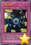 | 方界合神 | [陷阱] ①：从自己的手卡·场上把「方界」融合怪兽卡决定的融合素材怪兽送去墓地，把那1只融合怪兽从额外卡组融合召唤。 ②：表侧表示的「方界」怪兽被战斗破坏的场合或者从场上离开的场合，把墓地的这张卡除外才能发动。从手卡·卡组把1只4星以下的「方界」怪兽无视召唤条件特殊召唤。这个效果特殊召唤的怪兽在这个回合不会被战斗·效果破坏。 |
 | 究极爆风弹 | [魔法] ①：以自己场上1只融合召唤的「青眼究极龙」为对象才能发动。这个回合，那只怪兽在同1次的战斗阶段中可以作3次攻击，那只怪兽攻击的场合，直到伤害步骤结束时对方不能把魔法·陷阱·怪兽的效果发动。 |
 | 电磁石战士α | [怪兽|效果] 岩石/地 [★3] 1700/1100 「电磁石战士α」的①的效果1回合只能使用1次。 ①：这张卡召唤·特殊召唤成功的场合才能发动。从卡组把1只8星的「磁石战士」怪兽加入手卡。 ②：对方回合把这张卡解放才能发动。从卡组把1只4星的「磁石战士」怪兽特殊召唤。 |
 | 电磁石战士β | [怪兽|效果] 岩石/地 [★3] 1500/1500 「电磁石战士β」的①的效果1回合只能使用1次。 ①：这张卡召唤·特殊召唤成功的场合才能发动。从卡组把「电磁石战士β」以外的1只4星以下的「磁石战士」怪兽加入手卡。 ②：对方回合把这张卡解放才能发动。从卡组把1只4星的「磁石战士」怪兽特殊召唤。 |
 | 电磁石战士γ | [怪兽|效果] 岩石/地 [★3] 800/2000 「电磁石战士γ」的①的效果1回合只能使用1次。 ①：这张卡召唤·特殊召唤成功的场合才能发动。从手卡把「电磁石战士γ」以外的1只4星以下的「磁石战士」怪兽特殊召唤。 ②：对方回合把这张卡解放才能发动。从卡组把1只4星的「磁石战士」怪兽特殊召唤。 |
 | 电磁石战士 电磁狂战神 | [怪兽|效果] 岩石/地 [★8] 3000/2800 这张卡不能通常召唤。从自己的手卡·场上·墓地把「电磁石战士α」「电磁石战士β」「电磁石战士γ」各1只除外的场合可以特殊召唤。 ①：从自己墓地把1只4星以下的「磁石战士」怪兽除外，以对方场上1张卡为对象才能发动。那张卡破坏。 ②：这张卡被战斗或者对方的效果破坏的场合，以除外的自己的「电磁石战士α」「电磁石战士β」「电磁石战士γ」各1只为对象才能发动。那些怪兽特殊召唤。 |
 | A-突击核 | [怪兽|效果|同盟] 机械/光 [★4] 1900/200 ①：1回合1次，可以从以下效果选择1个发动。 ●以自己场上1只机械族·光属性怪兽为对象，把这张卡当作装备卡使用给那只怪兽装备。装备怪兽被战斗·效果破坏的场合，作为代替把这张卡破坏。 ●装备的这张卡特殊召唤。 ②：装备怪兽不受其他的对方怪兽的效果影响。 ③：这张卡从场上送去墓地的场合才能发动。选这张卡以外的自己墓地1只同盟怪兽加入手卡。 |
 | B-破坏龙兽 | [怪兽|效果|同盟] 机械/光 [★4] 1500/1800 ①：1回合1次，可以从以下效果选择1个发动。 ●以自己场上1只机械族·光属性怪兽为对象，把这张卡当作装备卡使用给那只怪兽装备。装备怪兽被战斗·效果破坏的场合，作为代替把这张卡破坏。 ●装备的这张卡特殊召唤。 ②：装备怪兽不受其他的对方的魔法卡的效果影响。 ③：这张卡从场上送去墓地的场合才能发动。从卡组把1只同盟怪兽加入手卡。 |
 | C-粉碎翼龙 | [怪兽|效果|同盟] 机械/光 [★4] 1200/2000 ①：1回合1次，可以从以下效果选择1个发动。 ●以自己场上1只机械族·光属性怪兽为对象，把这张卡当作装备卡使用给那只怪兽装备。装备怪兽被战斗·效果破坏的场合，作为代替把这张卡破坏。 ●装备的这张卡特殊召唤。 ②：装备怪兽不受其他的对方的陷阱卡的效果影响。 ③：这张卡从场上送去墓地的场合才能发动。从手卡把1只同盟怪兽特殊召唤。 |
 | ABC-双龙歼灭炮 | [怪兽|效果|融合] 机械/光 [★8] 3000/2800 「A-突击核」＋「B-破坏龙兽」＋「C-粉碎翼龙」 把自己的场上·墓地的上记卡除外的场合才能从额外卡组特殊召唤（不需要「融合」）。 ①：1回合1次，丢弃1张手卡，以场上1张卡为对象才能发动。那张卡除外。这个效果在对方回合也能发动。 ②：对方回合把这张卡解放，以除外的自己的机械族·光属性的同盟怪兽3种类为对象才能发动。那些怪兽特殊召唤。 |
 | 沉默剑士 | [怪兽|效果] 战士/光 [★4] 1000/1000 这张卡不能通常召唤。把自己场上1只战士族怪兽解放的场合才能特殊召唤。 ①：自己·对方的准备阶段发动。这张卡的攻击力上升500。 ②：1回合1次，魔法卡发动时才能发动。那个发动无效。 ③：场上的这张卡被战斗或者对方的效果破坏的场合才能发动。从手卡·卡组把「沉默剑士」以外的1只「沉默剑士」怪兽无视召唤条件特殊召唤。 |
 | 沉默之剑 | [魔法|速攻] ①：以自己场上1只「沉默剑士」怪兽为对象才能发动。那只自己怪兽的攻击力·守备力上升1500，直到回合结束时不受对方的效果影响。这张卡的发动和效果不会被无效化。 ②：把墓地的这张卡除外才能发动。从卡组把1只「沉默剑士」怪兽加入手卡。 |
 | 苏鲁伯的魔法骑兵 | [怪兽|效果|灵摆] 恐龙/地 [★4] 1500/1800 3/3 ←3 【灵摆】 3→ 【怪兽效果】 这张卡不受灵摆怪兽以外的怪兽发动的效果影响。 |